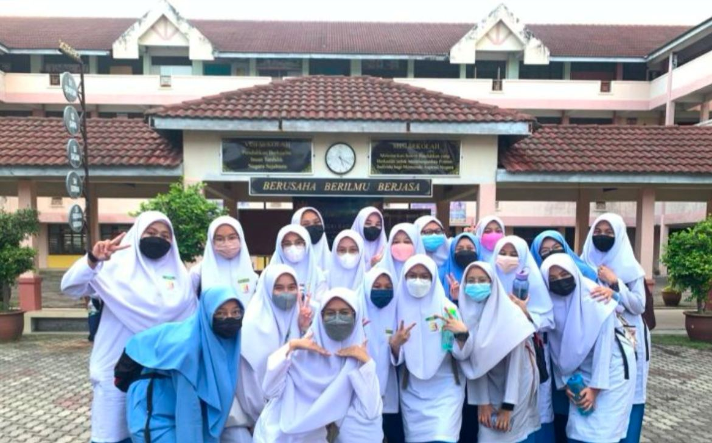
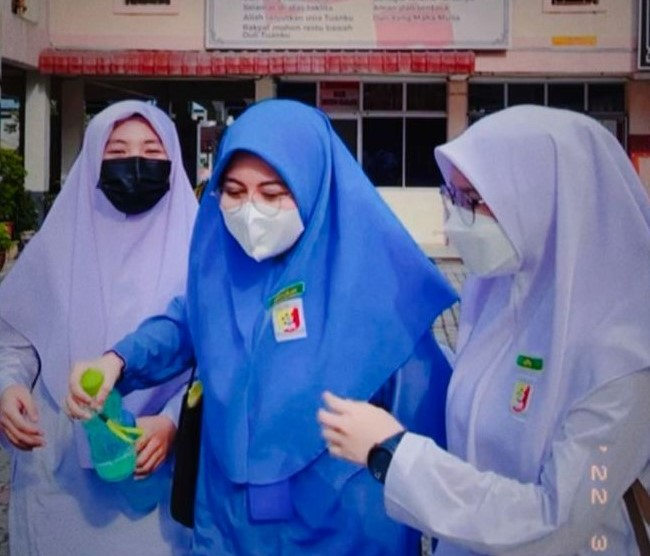

📝 My Education 𓂃🖊
| Year | Institution | Level Education | Achievement |
|---|---|---|---|
| 2009 - 2010 | Tabika Kemas SKI | Kindergarten | Learn Basic Skills |
| 2011 - 2013 | SK SKI | Primary School | Learn Upper Basic Skills |
| 2014 - 2016 | SK SEKSYEN 7 | Primary School | Done UPSR |
| 2017 - 2019 | SMK Seksyen 7 | Lower Secondary | Done PT3(Got 3A's) |
| 2020 - 2022 | SMK SKI | Upper Secondary | Done SPM(Got 2A's) |
| 2022 - NOW | UiTM Segamat | Diploma | Maintaining 3.00 pointer |
Pics of Me

- Last Class Picture

- Odd trio